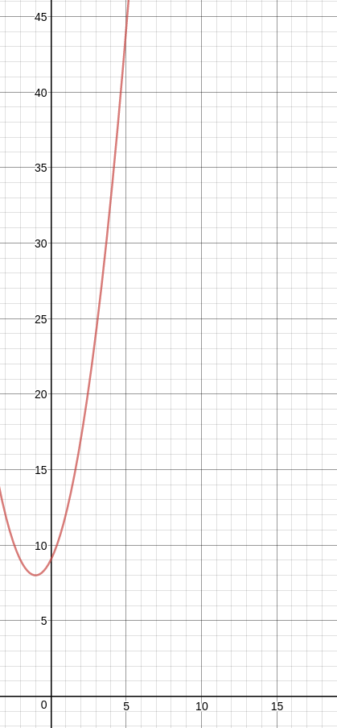

Shamir Secret Sharing and Threshold Cryptography
Disclaimer: This post is going to be technical, unlike my others up to this point. That being said, my goal is to ensure most people can understand what I’m talking about, so no prior knowledge of advanced math, computer science, or cryptography is needed to get an intuition about what I’m saying. In fact, you may even find this more interesting if you don’t have a technical background.
Why share a secret?
I know sharing a secret sounds counterintuitive, but hear me out. Imagine you’re designing a launch system for the United States’ nuclear missiles. Do you want the power to launch the entire earth destroying stash to lay in the hands of a single person? Probably not. So let’s give the keys to three people and require that they all be there in order for the missile to launch. That sounds pretty good to me, but what if one of them is on vacation or binge watching OITNB when the safety of the nation is in peril? We need a backup, so maybe instead of giving keys to three people and requiring they all be in attendance, let’s give the keys to 6 people and only require three of them to come together to launch the missiles. Problem solved!
Let’s try a more realistic scenario, imagine you have a really good password, but you’re afraid you’re going to forget it. Wouldn’t it be nice if you could share this password with a bunch of different people, so that if you forgot it, they could just tell it to you? The only downside here is that now all these people know your password, and that is not an ideal situation, when you most likely only have one password for all of your online accounts anyway. As it turns out, we can do this very sharing without revealing your password to anyone. All you need to know is some basic magic.
How to Share a secret
We’ll start by defining what a secret is. A secret can be any positive integer. This means it can also be any string encoded as a series of bytes. Take the string abc for example. abc in ASCII can be represented by the bytes: 01100001 01100010 01100011 or by the integers: 97 98 99. They’re all just numbers so they can all be shared. As an added bonus, depending on the specific encoding used, we can encrypt passwords with special characters in them too!
The Scheme
Some notation first. We’re going to use a mixture of some standard and some not-so-standard notation because I’m not a cryptographer and I think my way is simpler to understand. We’ll call our secret and say that the number of shares we want to create is and the threshold to reconstruct the secret is . This is denoted as .
Our secret is an integer. Let’s plot it on a graph. Specifically, lets plot it so that it is the y-coordinate of a point where the x-coordinate is 0. This is called the y-intercept of a polynomial. Now, choose integers at random and make them the coefficients of a polynomial where the constant term is . For example, if my secret , my threshold , and my three random numbers are 2 and 1 then the polynomial is which looks like this:

Now, all that needs to be done is select any points on the graph (just not ) and share them with whomever we trust. Notice, each of these points was chosen at random, as was the polynomial itself, so the points convey no information about the secret! Furthermore, as it turns out, once we get back of the shares we dispersed, there is a simple function that can be used to reconstruct the function and find out the secret. This is called a Lagrange Interpolating Polynomial. \begin{equation} f(x)=\sum_{i=1}^{n}f(x_i)\prod_{\substack{j=1\atop j\neq i}}^{n}\frac{x-x_j}{x_i-x_j} \end{equation}
This equation might look a little off-putting to some of you, but all it’s doing is combining points and using them to find the unique polynomial of degree that goes through those points. Once we have reconstructed this polynomial, all we need to do is solve and we have our secret back! C’est tout! That’s the basics of how the Shamir Secret Sharing Scheme works. There are some problems with this implementation and some optimizations we can make, but the math becomes slightly (but only slightly) more difficult. You have been warned.
Security Issue
As it turns out, this naive approach isn’t actually information theoretically secure. With some pretty simple transformations, given points and the public knowledge of how the scheme works, an adversary can use rather simple algebra to find out . To do this, one merely needs to solve a system of equations, each with two unknowns. For small values of (and thus polynomials of a small degree), this process can be done by hand and leave the adversary with a relatively small range of possibilities for the secret. With larger , the task is still quite easy for a computer to solve. There are, however, relatively simple ways of bypassing this security flaw.
When trying to compute the answer as above with shares, we are left with a contiguous range of possible secrets. All an adversary would need to do to find the secret is plug each one of the possibilities into an equation and check which is the correct one. However, what if each possibility were only a possibility . This is to say, what if instead of each share being , it was for some >. If this were the case, the possibilities would now be infinite, since for the new set of possibilities :
\begin{equation} J = \bigcup_{i=0}^{|K|} k_ipx, x \in \mathbb{N^+} \end{equation}
To implement this, we create our polynomial in the field GF(p). In practice, this means the coefficients of the polynomial are and we create shares . The problem this creates is that the shares are no longer points on the polynomial, and thus the interpolation equation needs to be modified slightly.
Optimization
On the topic of modifying the Lagrange equation, let’s kill two birds with one stone. Why should we be spending so many expensive CPU cycles to figure out the entire polynomial when all we really need is the y-intercept. Moving a few items around, we can pretty easily solve for instead of . \begin{equation} f(0)=\sum_{i=1}^{n}f(x_i)\prod_{\substack{j=1\atop j\neq i}}^{n}\frac{x_j}{x_j-x_i} \end{equation} Now we’ve saved a few CPU cycles and can feel better about ourselves, but this still won’t actually work. To make this work we have to do something about the moduli. This can be solve by taking the inverse modulo of each term with respect to . An inverse mod is a number such that . That’s it! That’s how you share a secret securely and extensibly. After you generate shares, you can use the same polynomial to generate as many shares of the same secret as you need, without having to worry about invalidating prior shares.
You can check out my Java implementation on Github.